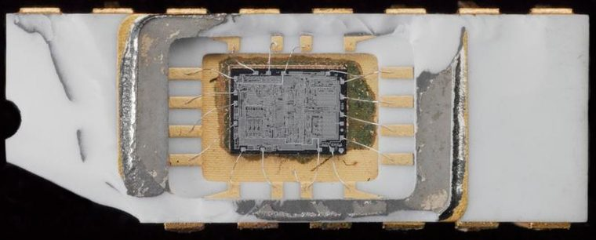
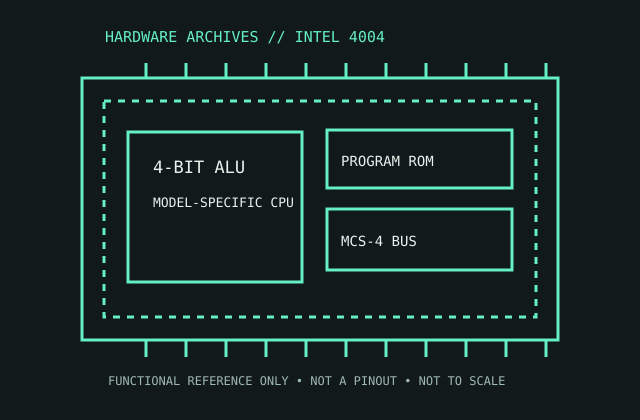

[ EARLY MICROPROCESSORS // IDENTIFIED PROCESSOR ]
Intel 4004
Intel’s 4004 is a historically important 4-bit CPU introduced in 1971 for the MCS-4 calculator system.


MODEL IDENTIFICATION: Intel 4004. Compare the printed part number, speed grade, package, cache configuration, and stepping with the cited documentation; do not transfer one variant’s limits to another.
Recorded specifications
| Cataloged part | Intel 4004 |
|---|---|
| Era / family | MCS-4 family, 1971; original Intel 4004 microprocessor. |
| Key specifications | 4-bit data path; 10-bit program address; 12-bit program address counter (up to 4 KB of program space); 740 kHz clock; 16-pin ceramic DIP. The companion MCS-4 set included ROM, RAM, and I/O devices; the 4004 alone is not a complete computer. |
| Interface / fit | Use within a compatible MCS-4 chipset/system. Its 16-pin package and signal interface are not related to later x86 PC sockets. |
| Variant distinction | Do not conflate the 4004 with the later 4040, which is a distinct, enhanced 4-bit processor. MCS-4 system parts and mask-programmed ROMs are separate devices. |
Compatibility and variants
- Use within a compatible MCS-4 chipset/system. Its 16-pin package and signal interface are not related to later x86 PC sockets.
- Do not conflate the 4004 with the later 4040, which is a distinct, enhanced 4-bit processor. MCS-4 system parts and mask-programmed ROMs are separate devices.
- Confirm the system manufacturer’s exact processor support list, firmware minimum, board revision, power/thermal envelope, and memory requirements before installation.
Service and archival notes
Document the full package marking and date code, ceramic condition, and the accompanying 4001/4002/4003 device identities. Avoid powering an undocumented assembly; retain provenance and system schematics.
Preserve provenance and a record of the exact marking, condition, tested board/platform, firmware, cooling, memory configuration, and test conditions. Separate published specification limits from observations made on a particular surviving system.
Sources & further reading
- Intel 4004 — Intel Museum product historySpecific model or manufacturer-family reference; verify revision and configuration against the device marking and platform documentation.
- MCS-4 Micro Computer Set User’s Manual — Intel-authored system reference (archived)Specific model or manufacturer-family reference; verify revision and configuration against the device marking and platform documentation.
- Intel 4004 history and system context — Computer History Museum collectionSpecific model or manufacturer-family reference; verify revision and configuration against the device marking and platform documentation.
Third-party reference pages and document archives are finding aids. The matching manufacturer datasheet, product specification, and board support documentation take precedence for the exact revision and host.